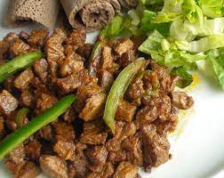

Ethiopian Food
Tibs

Description
Tibs is an Ethiopian dish consisting of stir-fried meat and vegetables. ... Due to the usage of various types of meat, there are numerous variations of this Ethiopian delicacy. Tibs is usually prepared as a sign of respect to someone, or as a festive dish at special events and holidays.
Ingredients to make tibs
- Meat
- Gerbere spice
- Ginger
- Herbs
- Garlic
Steps to make Tibs
- Start with the sauce by adding the tomatoes and onions to a pan and cook on medium heat for 3 to 4 minutes, until soft.
- Then add 2 tablespoons of oil and the berbere.
- Turn the heat to low and simmer for about 5 minutes. Next, add the garlic and simmer for 2 more minutes.
- The last step for the sauce is to add ½ teaspoon of salt and the black cardamom or black pepper. In a separate pan, heat 1 tablespoon of oil on medium-high heat, then add the meat.
- Sprinkle the meat with ½ teaspoon of salt and cook for 2 to 3 minutes, stirring occasionally. Move the meat to the pan with the berbere sauce.
- Cook until done, about 8-10 minutes.